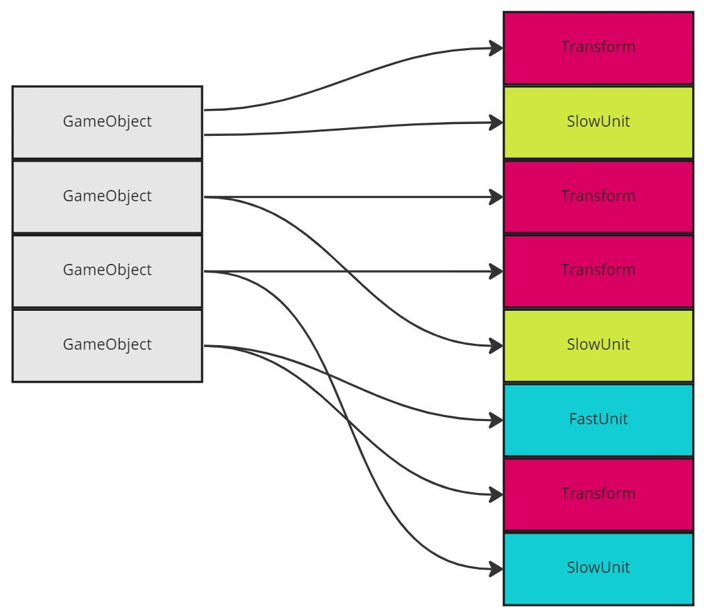

Mis on DOD?
Data-oriented design (DOD) on arendusmeetod, mis keskendub andmete korraldamisele ja töötlemisele viisil, mis maksimeerib süsteemi jõudlust ja efektiivsust. Meetodi eesmärk on optimeerida, kuidas programm andmeid mälu ja protsessori vaatevinklist haldab, et vähendada tarbetut töötlemisaega ja suurendada süsteemi skaleeritavust.
DOD erineb objektorienteeritud programmeerimisest, kuna keskmes pole mitte objektid ja nende käitumine, vaid andmed ja nende töötlemise viis. See lähenemine sobib eriti hästi suure jõudlusega rakenduste, näiteks mängude, simulatsioonide ja andmemahukate süsteemide jaoks.

DOD eelised ja puudused
Eelised:
- Jõudluse optimeerimine: Andmed ja nende töötlus on viidud maksimumini, mis on eriti oluline andmemahukates ja reaalajas rakendustes.
- Lihtsus süsteemi tasemel: Selge fookus andmevoogudele lihtsustab süsteemi analüüsi ja optimeerimist.
- Skaleeritavus: DOD süsteemid skaleeruvad hästi suuremate andmemahtude ja keerukusega rakenduste korral.
Puudused:
- Keerukus arendajatele: Nõuab arendajatelt sügavat arusaamist andmestruktuuridest, mälu toimimisest ja protsessori arhitektuurist.
- Vähem paindlikkust: Ranged andmevoogude ja struktuuride nõuded võivad muuta süsteemi keerulisemaks muutustele kohandada.
- Aeganõudev planeerimine: Andmete ja algoritmide optimeerimine võib võtta rohkem aega võrreldes tavapärase lähenemisega.
Näide vahendist: Unity DOTS (Data-Oriented Technology Stack)
Unity DOTS on andmepõhine tehnoloogiaplokk, mis on loodud mängude ja muude kõrge jõudlusega rakenduste jaoks. See põhineb kolmel komponendil:
- ECS (Entity Component System): Muudab mängude loogika andmekeskseks.
- C# Job System: Võimaldab andmete paralleelse töötlemise, optimeerides protsessori kasutust.
- Burst Compiler: Koostab koodi madala taseme optimeeritult, et tagada maksimaalne jõudlus.
- DOTS toetab arendajaid, kes soovivad kasutada DOD meetodit, pakkudes tööriistu ja raamistikke, mis lihtsustavad andmevoogude optimeerimist.
Reaalajas koostööd disainerite ja arendajate vahel.
- Kiiret iteratsiooni ja prototüüpide jagamist kasutajatega testimiseks.
- Integratsiooni arendajatele oluliste tööriistadega, nagu Zeplin või Jira.